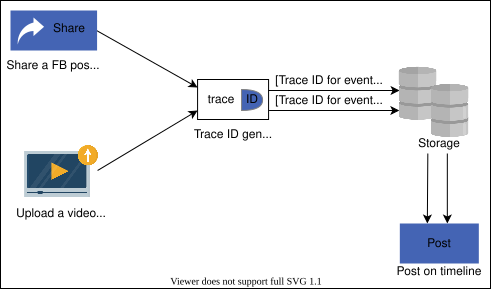
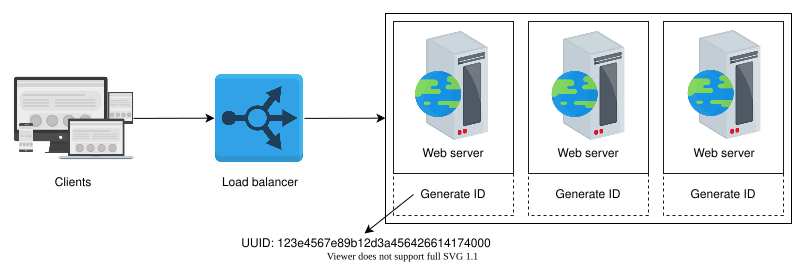
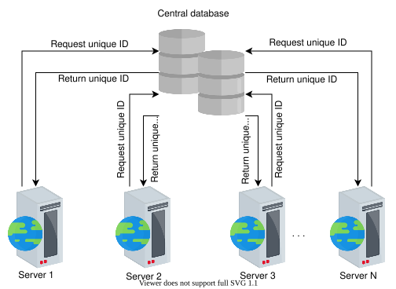
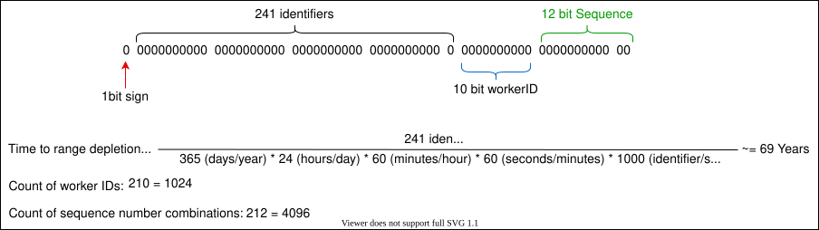
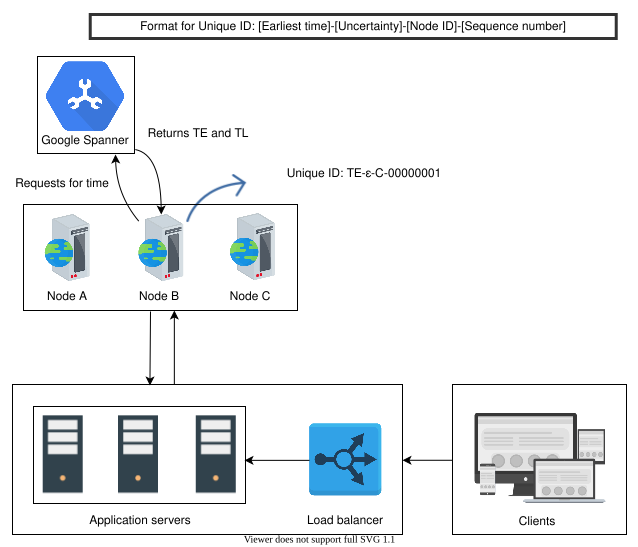

12. Sequencer
System Design: Sequencer
System Design: Sequencer
Understand the basics of designing a sequencer.
We'll cover the following
Motivation#
There can be millions of events happening per second in a large distributed system. Commenting on a post on Facebook, sharing a Tweet, and posting a picture on Instagram are just a few examples of such events. We need a mechanism to distinguish these events from each other. One such mechanism is the assignment of globally unique IDs to each of these events.
Assigning a primary key to an entry in a database is another use case of a unique ID. Usually, the auto-increment feature in databases fulfills this requirement. However, that feature won’t work for a distributed database, where different nodes independently generate the identifiers. For this case, we need a unique ID generator that acts as a primary key in a distributed setting—for example, a horizontally-sharded table.
A unique ID helps us identify the flow of an event in the logs and is useful for debugging. A real-world example of unique ID usage is Facebook’s end-to-end performance tracing and analysis system, Canopy. Canopy uses TraceID to identify an event uniquely across the execution path that may potentially perform hundreds of microservices to fulfill one user request.

How do we design a sequencer?#
We’ve divided the sequencer’s comprehensive design into the following two lessons:
- Design of a Unique ID Generator: After enlisting the requirements of the design, we discuss three ways to generate unique IDs: using UUID, using a database, and using a range handler.
- Unique IDs with Causality: In this lesson, we incorporate an additional factor of time in the generation of IDs and explain the process by taking causality into consideration.
Unique IDs are important for identifying events and objects within a distributed system. However, designing a unique ID generator within a distributed system is challenging. In the next lesson, let’s look at the requirements for a distributed unique ID generation system.
Design of a Unique ID Generator
Design of a Unique ID Generator
Learn how to design a system that generates a unique ID.
In the previous lesson, we saw that we need unique identifiers for many use cases, such as identifying objects (for example, Tweets, uploaded videos, and so on) and tracing the execution flow in a complex web of services. Now, we’ll formalize the requirements for a unique identifier and discuss three progressively improving designs to meet our requirements.
Requirements for unique identifiers#
The requirements for our system are as follows:
-
Uniqueness: We need to assign unique identifiers to different events for identification purposes.
-
Scalability: The ID generation system should generate at least a billion unique IDs per day.
-
Availability: Since multiple events happen even at the level of nanoseconds, our system should generate IDs for all the events that occur.
-
64-bit numeric ID: We restrict the length to 64 bits because this bit size is enough for many years in the future. Let’s calculate the number of years after which our ID range will wrap around.
Total numbers available = 264 = 1.8446744 x 1019
Estimated number of events per day = 1 billion = 109
Number of events per year = 365 billion = 365×109
Number of years to deplete identifier range = 365×109264 = 50,539,024.8595 years
64 bits should be enough for a unique ID length considering these calculations.
Let’s dive into the possible solutions for the problem mentioned above.
First solution: UUID#
A straw man solution for our design uses UUIDs (universally unique IDs). This is a 128-bit number and it looks like 123e4567e89b12d3a456426614174000 in hexadecimal. It gives us about 1038 numbers. UUIDs have different versions. We opt for version 4, which generates a pseudorandom number.
Each server can generate its own ID and assign the ID to its respective event. No coordination is needed for UUID since it’s independent of the server. Scaling up and down is easy with UUID, and this system is also highly available. Furthermore, it has a low probability of collisions. The design for this approach is given below:

Point to Ponder
(Select all that apply.) What are the pros of using the UUID approach?
A)
It doesn’t require synchronization between servers.
B)
It’s a simple approach.
C)
It’s scalable.
D)
It’s available.
Cons#
Using 128-bit numbers as primary keys makes the primary-key indexing slower, which results in slow inserts. A workaround might be to interpret an ID as a hex string instead of a number. However, non-numeric identifiers might not be suitable for many use cases. The ID isn’t of 64-bit size. Moreover, there’s a chance of duplication. Although this chance is minimal, we can’t claim UUID to be deterministically unique. Additionally, UUIDs given to clients over time might not be monotonically increasing. The following table summarizes the requirements we have fulfilled using UUID:
Unique | Scalable | Available | 64-bit numeric ID | |
Using UUID | ✖️ | ✔️ | ✔️ | ✖️ |
Second solution: using a database#
Let’s try mimicking the auto-increment feature of a database. Consider a central database that provides a current ID and then increments the value by one. We can use the current ID as a unique identifier for our events.

Point to Ponder
Question
What can be a potential problem of using a central database?
To cater to the problem of a single point of failure, we modify the conventional auto-increment feature that increments by one. Instead of incrementing by one, let’s rely on a value m, where m equals the number of database servers we have. Each server generates an ID, and the following ID adds m to the previous value. This method is scalable and prevents the duplication of IDs. The following image provides a visualization of how a unique ID is generated using a database:
Pros#
This approach is scalable. We can add more servers, and the value of m will be updated accordingly.
Cons#
Though this method is somewhat scalable, it’s difficult to scale for multiple data centers. The task of adding and removing a server can result in duplicate IDs. For example, suppose m=3, and server A generates the unique IDs 1, 4, and 7. Server B generates the IDs 2, 5, and 8, while server C generates the IDs 3, 6, and 9. Server B faces downtime due to some failure. Now, the value m is updated to 2. Server A generates 9 as its following unique ID, but this ID has already been generated by server C. Therefore, the IDs aren’t unique anymore.
The table below highlights the limitations of our solution. A unique ID generation system shouldn’t be a single point of failure (SPOF). It should be scalable and available.
Unique | Scalable | Available | 64-bit numeric ID | |
Using UUID | ✖️ | ✔️ | ✔️ | ✖️ |
Using a database | ✖️ | ✖️ | ✔️ | ✔️ |
Third solution: using a range handler#
Let’s try to overcome the problems identified in the previous methods. We can use ranges in a central server. Suppose we have multiple ranges for one to two billion, such as 1 to 1,000,000; 1,000,001 to 2,000,000; and so on. In such a case, a central microservice can provide a range to a server upon request.
Any server can claim a range when it needs it for the first time or if it runs out of the range. Suppose a server has a range, and now it keeps the start of the range in a local variable. Whenever a request for an ID is made, it provides the local variable value to the requestor and increments the value by one.
Let’s say server 1 claims the number range 300,001 to 400,000. After this range claim, the user ID 300,001 is assigned to the first request. The server then returns 300,002 to the next user, incrementing its current position within the range. This continues until user ID 400,000 is released by the server. The application server then queries the central server for the next available range and repeats this process.
This resolves the problem of the duplication of user IDs. Each application server can respond to requests concurrently. We can add a load balancer over a set of servers to mitigate the load of requests.
We use a microservice called range handler that keeps a record of all the taken and available ranges. The status of each range can determine if a range is available or not. The state—that is, which server has what range assigned to it—can be saved on a replicated storage.
This microservice can become a single point of failure, but a failover server acts as the savior in that case. The failover server hands out ranges when the main server is down. We can recover the state of available and unavailable ranges from the latest checkpoint of the replicated store.

Pros#
This system is scalable, available, and yields user IDs that have no duplicates. Moreover, we can maintain this range in 64 bits, which is numeric.
Cons#
We lose a significant range when a server dies and can only provide a new range once it’s live again. We can overcome this shortcoming by allocating shorter ranges to the servers, although ranges should be large enough to serve identifiers for a while.
The following table sums up what this approach fulfills for us:
Unique | Scalable | Available | 64-bit numeric ID | |
Using UUID | ✖️ | ✔️ | ✔️ | ✖️ |
Using a database | ✖️ | ✖️ | ✔️ | ✔️ |
Using a range handler | ✔️ | ✔️ | ✔️ | ✔️ |
We developed a solution that provides us with a unique ID, which we can assign to various events and even use as a primary key. But what if we add a requirement that the ID is time sortable too?
Unique IDs with Causality
Unique IDs with Causality
Learn how to use the time to generate a unique ID and also maintain the causality of events.
Causality#
In the previous lesson,we generated unique IDs to differentiate between various events. Apart from having unique identifiers for events, we’re also interested in finding the sequence of these events. Let’s consider an example where Peter and John are two Twitter users. John posts a comment (event A), and Peter replies to John’s comment (event B). Event B is dependent on event A and can’t happen before it. The events are not concurrent here.
We can also have concurrent events—that is, two events that occur independently of each other. For example, if Peter and John comment on two different Tweets, there’s no happened-before relationship or causality between them. It’s essential to identify the dependence of one event over the other but not in the case of concurrent events.
Note: The scenario described above can also be handled by assigning a unique ID and encoding the dependence of events using a social graph. We might also use a separate time data structure and a simple unique ID. However, we want a unique ID to do double duty—provide unique identification and also help with the causality of events.
The following slides provide a visualization of concurrent and nonconcurrent events.
Some applications need the events to have unique identifiers and carry any relevant causality information. An example of this is giving an identifier to the concurrent writes of a key into a key-value store to implement the last-write-wins strategy.
We can either use logical or physical clocks to infer causality. Some systems have additional requirements where we want event identifiers’ causality to map wall-clock time. An example of this is a financial application that complies with the European MiFID regulations. MiFID requires clocks to be within 100 microseconds of UTC to detect anomalies during high-volume/high-speed market trades.
Note: There are many subtleties associated with logical or physical clocks. We can refer to the text below titled “Time in a Distributed System” to refresh our concepts of time.
We use time to determine the sequence of events in our life. For example, if Sam took a bath at 6 a.m. and ate breakfast at 7:00 a.m., we can determine that Sam took a bath before breakfast by the time stamps of each event. Time stamps, therefore, can be used to maintain causality.
Use UNIX time stamps#
UNIX time stamps are granular to the millisecond and can be used to distinguish different events. We have an ID-generating server that can generate one ID in a single millisecond. Any request to generate a unique ID is routed to that server, which returns a time stamp and then returns a unique ID. The ability to generate an ID in milliseconds allows us to generate a thousand identifiers per second. This means we can get 24(hour)∗60(min/hour)∗60(sec/min)∗1000(ID/sec)=86400000IDs in a day. That’s less than a billion per day.
Note: Connect to the following terminal to view the UNIX time stamp in milliseconds.
Click to Connect...
Our system works well with generating IDs, but it poses a crucial problem. The ID-generating server is a single point of failure (SPOF), and we need to handle it. To cater to SPOF, we can add more servers. Each server generates a unique ID for every millisecond. To make the overall identifier unique across the system, we attach the server ID with the UNIX time stamp. Then, we add a load balancer to distribute the traffic more efficiently. The design of a unique ID generator using a UNIX time stamps is given below:

Unique | Scalable | Available | 64-bit numeric ID | Causality maintained | |
Using UUID | ✖️ | ✔️ | ✔️ | ✖️ | ✖️ |
Using a database | ✖️ | ✖️ | ✔️ | ✔️ | ✖️ |
Using a range handler | ✔️ | ✔️ | ✔️ | ✔️ | ✖️ |
Using UNIX time stamps | ✖️ | weak | ✔️ | ✔️ | weak |
Twitter Snowflake#
Let’s try to use time efficiently. We can use some bits out of our targetted 64 bits for storing time and the remaining for other information. An overview of division is below:

The explanation of the bits division is as follows:
• Sign bit: A single bit is assigned as a sign bit, and its value will always be zero. It makes the overall number positive. Doing so helps to ensure that any programming environment using these identifiers interprets them as positive integers.
• Time stamp: 41 bits are assigned for milliseconds. The Twitter Snowflake default epoch will be used. Its value is 1288834974657, which is equivalent to November 4, 2010, 01:42:54 UTC. We can initiate our own epoch when our system will be deployed, say January 1, 2022, at 12 midnight can be the start of our epoch from zero. The maximum time to deplete this range is shown below:
Time to range depletion = 365(days/year)∗24(hours/day)∗60(minutes/hour)∗60(seconds/minut)∗1000(identifier/sec)241identifiers ~= 69 years
The above calculations give us 69 years before we need a new algorithm to generate IDs. As we saw earlier, if we can generate 1,000 identifiers per second, we aren’t able to get our target of a billion identifiers per day. Though now, in the Snowflake proposal, we have ample identifiers available when we utilize worker ID and machine local sequence numbers.
• Worker number: The worker number is 10 bits. It gives us 210 = 1,024 worker IDs. The server creating the unique ID for its events will attach its ID.
• Sequence number: The sequence number is 12 bits. For every ID generated on the server, the sequence number is incremented by one. It gives us 212 = 4,096 unique sequence numbers. We’ll reset it to zero when it reaches 4,096. This number adds a layer to avoid duplication.
The following slides show the conversion of the time stamp to UTC.
Pros#
Twitter Snowflake uses the time stamp as the first component. Therefore, they’re time sortable. The ID generator is highly available as well.
Cons#
IDs generated in a dead period are a problem. The dead period is when no request for generating an ID is made to the server. These IDs will be wasted since they take up identifier space. The unique range possible will deplete earlier than expected and create gaps in our global set of user IDs.
Point to Ponder
Question
Can you find another shortcoming in the design shown above?
Another weak point of this system is its reliance on time. NTP can affect the working of this system. If the clock on one of the servers drifts two seconds in the future, other servers are two seconds behind. The NTP clock recognizes it and recalibrates its clock. Now, all serves will be aligned. However, in that drifting process, IDs could have been generated for a time that hasn’t occurred yet, and now we’ll have a pair of possible nonconcurrent events with the same time stamp. Lastly, the causality of our events won’t be maintained.
Note: The Network Time Protocol (NTP) is a networking protocol for clock synchronization between computer systems over packet-switched, variable-latency data networks. NTP intends to synchronize all participating computers within a few milliseconds of Coordinated Universal Time (UTC). It mitigates the effects of variable network latency.
Having accurate time still remains an issue. We can read a machine’s time-of-day clock with microsecond or even nanosecond resolution. Even with this fine-grained measurement, the risks of NTP remain. Since we can’t rely on physical clocks, let’s put logical clocks to use.
The following table gives an overview of the requirements that have been fulfilled using different design approaches.
Unique | Scalable | Available | 64-bit numeric ID | Causality maintained | |
Using UUID | ✖️ | ✔️ | ✔️ | ✖️ | ✖️ |
Using a database | ✖️ | ✖️ | ✔️ | ✔️ | ✖️ |
Using a range handler | ✔️ | ✔️ | ✔️ | ✔️ | ✖️ |
Using UNIX time stamps | ✖️ | weak | ✔️ | ✔️ | weak |
Using Twitter Snowflake | ✔️ | ✔️ | ✔️ | ✔️ | weak |
Using logical clocks#
We can utilize logical clocks (Lamport and vector clocks) that need monotonically increasing identifiers for events.
Lamport clocks#
In Lamport clocks, each node has its counter. All of the system’s nodes are equipped with a numeric counter that begins at zero when first activated. Before executing an event, the numeric counter is incremented by one. The message sent from this event to another node has the counter value. When the other node receives the message, it first updates its logical clock by taking the maximum of its clock value. Then, it takes the one sent in a message and then executes the message.
Lamport clocks provide a unique partial ordering of events using the happened-before relationship. We can also get a total ordering of events by tagging unique node/process identifiers, though such ordering isn’t unique and will change with a different assignment of node identifiers. However, we should note that Lamport clocks don’t allow us to infer causality at the global level. This means we can’t simply compare two clock values on any server to infer happened-before relationship. Vector clocks overcome this shortcoming.
Vector clocks#
Vector clocks maintain causal history—that is, all information about the happened-before relationships of events. So, we must choose an efficient data structure to capture the causal history of each event.
Consider the design shown below. We’ll generate our ID by concatenating relevant information, just like the Twitter snowflake, with the following division:
-
Sign bit: A single bit is assigned as a sign bit, and its value will always be zero.
-
Vector clock: This is 53 bits and the counters of each node.
-
Worker number: This is 10 bits. It gives us 2^{10} = 1,024 worker IDs.
The following slides explain the unique ID generation using vector clocks, where the nodes A, B, and C reside in a data center.
Note: In the following slides, we haven’t converted the data to bits for the sake of understanding. The pattern we’ll use for the unique ID is the following:
[vector-clock][worker-id]
Our approach with vector clocks works. However, in order to completely capture causality, a vector clock must be at least n nodes in size. As a result, when the total number of participating nodes is enormous, vector clocks require a significant amount of storage. Some systems nowadays, such as web applications, treat every browser as a client of the system. Such information increases the ID length significantly, making it difficult to handle, store, use, and scale.
Unique | Scalable | Available | 64-bit numeric ID | Causality maintained | |
Using UUID | ✖️ | ✔️ | ✔️ | ✖️ | ✖️ |
Using a database | ✖️ | ✖️ | ✔️ | ✔️ | ✖️ |
Using a range handler | ✔️ | ✔️ | ✔️ | ✔️ | ✖️ |
Using UNIX time stamps | ✖️ | weak | ✔️ | ✔️ | weak |
Using Twitter Snowflake | ✔️ | ✔️ | ✔️ | ✔️ | weak |
Using vector clocks | ✔️ | weak | ✔️ | can exceed | ✔️ |
Point to Ponder
Question
Would a global clock help solve our problem?
TrueTime API#
Google’s TrueTime API in Spanner is an interesting option. Instead of a particular time stamp, it reports an interval of time. When asking for the current time, we get back two values: the earliest and latest ones. These are the earliest possible and latest possible time stamps.
Based on its uncertainty calculations, the clock knows that the actual current time is somewhere within that interval. The width of the interval depends, among other things, on how long it has been since the local quartz clock was last synchronized with a more accurate clock source.
Google deploys a GPS receiver or atomic clock in each data center, and clocks are synchronized within about 7 ms. This allows Spanner to keep the clock uncertainty to a minimum. The uncertainty of the interval is represented as epsilon.
The following slides explain how TrueTime’s time master servers work with GPS and atomic clocks in multiple data centers.
The following slides explain how time is calculated when the client asks to give TrueTime.
Spanner guarantees that two confidence intervals don’t overlap (that is, Aearliest < Alatest < Bearliest < Blatest), then B definitely happened after A.
We generate our unique ID using TrueTime intervals. Let’s say the earliest interval is TE, the latest is TL, and the uncertainty is ε. We use TE in milliseconds as a time stamp in our unique ID.
-
Time stamp: The time stamp is 41 bits. We use TE as a time stamp.
-
Uncertainty: The uncertainty is four bits. Since the maximum uncertainty is claimed to be 6–10 ms, we’ll use four bits for storing it.
-
Worker number: This is 10 bits. It gives us 210 = 1,024 worker IDs.
-
Sequence number: This is eight bits. For every ID generated on the server, the sequence number is incremented by one. It gives us 28 = 256 combinations. We’ll reset it to zero when it reaches 256.

Pros#
TrueTime satisfies all the requirements. We’re able to generate a globally unique 64-bit identifier. The causality of events is maintained. The approach is scalable and highly available.
Cons#
If two intervals overlap, then we’re unsure in what order A and B occurred. It’s possible that they’re concurrent events, but a 100% guarantee can’t be given. Additionally, Spanner is expensive because it ensures high database consistency. The dollar cost of a Spanner-like system is also high due to its elaborate infrastructure needs and monitoring.
The updated table provides the comparison between the different system designs for generating a unique ID.
Unique | Scalable | Available | 64-bit numeric ID | Causality maintained | |
Using UUID | ✖️ | ✔️ | ✔️ | ✖️ | ✖️ |
Using a database | ✖️ | ✖️ | ✔️ | ✔️ | ✖️ |
Using a range handler | ✔️ | ✔️ | ✔️ | ✔️ | ✖️ |
Using UNIX time stamps | ✖️ | weak | ✔️ | ✔️ | weak |
Using Twitter Snowflake | ✔️ | ✔️ | ✔️ | ✔️ | weak |
Using vector clocks | ✔️ | weak | ✔️ | can exceed | ✔️ |
Using TrueTime | ✔️ | ✔️ | ✔️ | ✔️ | ✔️ |
Summary#
-
We want to avoid duplicate identifiers. Consider what will happen if duplicate payment or purchase orders are generated.
-
UUIDs provide probabilistic guarantees about the keys’ non-collision. Deterministically getting non-collision guarantees might need consensus among different distributed entities or stores and read from the replicated store.
-
As key length becomes large, it often causes slower tuple updates in a database. Therefore, identifiers should be big enough but not too big.
-
Often, it’s desirable that no one is able to guess the next ID. Otherwise, undesirable data leaks can happen, and the organization’s competitors may learn how many orders were processed in a day by simply looking at order IDs. Adding a few random numbers to the bits of the identifier make it hard to guess, although this comes at a performance cost.
-
We can use simple counters for generating unique IDs if we don’t want to relate ID to time. Fetching time stamps is slower than simple counters.
-
We can just use simple counters for generating unique IDs if we don’t want to relate ID to time. Fetching time stamps is slower than simple counters, though this requires that we store generated IDs persistently. The counter needs to be stored in the database. Storage comes with its own issues. These include multiple concurrent writes becoming overwhelming for the database and the database being the single point of failure.
-
For some distributed databases, such as Spanner, it can hurt to generate monotonically increasing or decreasing IDs. Google reports the following: “In fact, using monotonically increasing (or decreasing) values as row keys does not follow best practices in Spanner because it creates hotspots in the database, leading to a reduction in performance.”
Note: Globally ordering events is an expensive procedure. A feature that was fast and simple in a centralized database (auto-increment based ID) becomes slow and complicated in its distributed counterpart due to some fundamental constraints (such as consensus, which is difficult among remote entities).
For example, Spanner, a geographically distributed database, reports that “if a read-update transaction on a single cell (one column in a single row) has a latency of 10 milliseconds (ms), then the maximum theoretical frequency of issuing of sequence values is 100 per second. This maximum applies to the entire database, regardless of the number of client application instances, or the number of nodes in the database. This is because a single node always manages a single row.” If we could compromise on the requirements for global orderings and gapless identifiers, we would be able to get many identifiers in a shorter time, that is, a better performance.